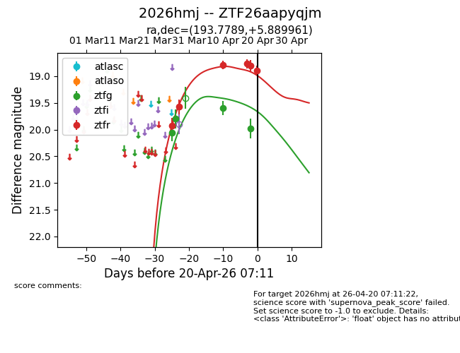
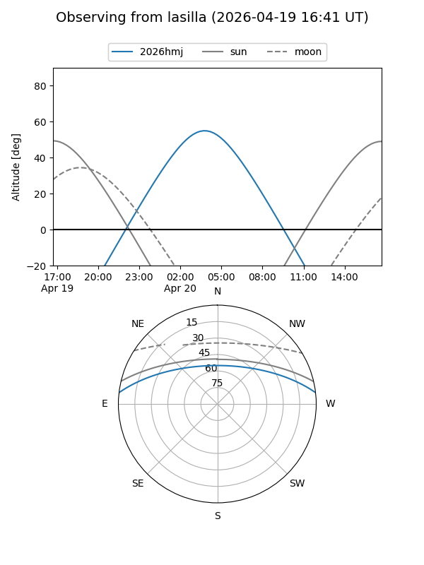
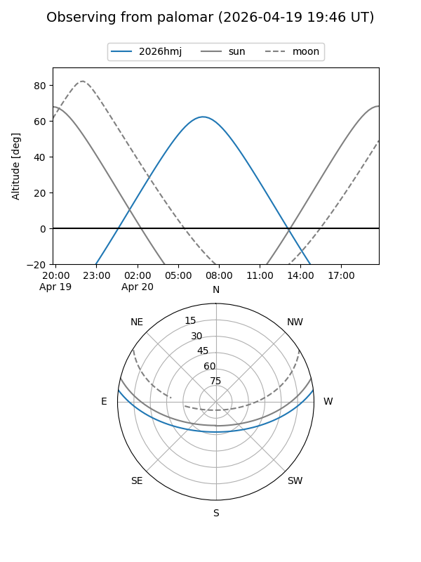
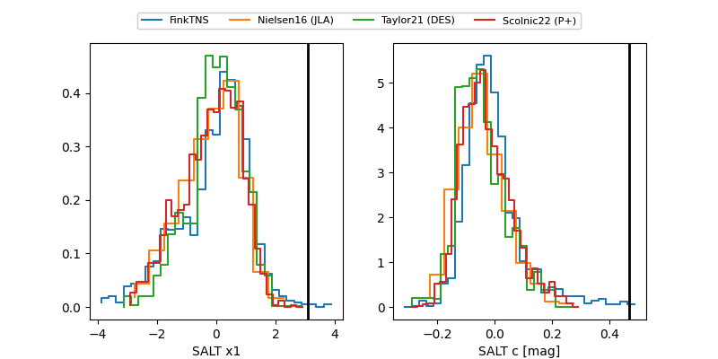

2026hmj
Target 2026hmj at 2026-04-20 07:22
Aliases and brokers:
FINK: link
Lasair: link
ALeRCE: link
TNS: link
YSE: link
alt names
ZTF26aapyqjm (ztf,fink_ztf)
2026hmj (tns,yse)
Coordinates:
equatorial (ra, dec) = 193.7789,+5.88996
equatorial (HMS+DMS) = 12:55:06.93,+05:53:23.86
galactic (l, b) = (305.4552,+68.74369)
Flags:
Photometry:
last ztfg=19.98, ztfr=18.89
4 ztfg, 6 ztfr detections
Lightcurve

Visibility


Additional plots
